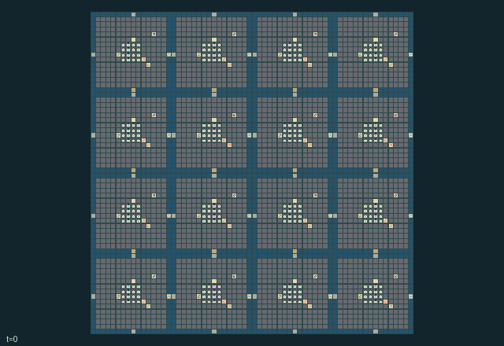

GI232 · 玄武群岛救援

救出三十二名受困居民，在本地避难所、堤道和船容量间分配有限玄武岩；不同基础设施用途竞争同一材料。
身份与原始接口
共有 256 个独立可操作角色；每人 20 个离散动作；每人的原生观察宽度 686；原始时限 896 步。声明的单步奖励范围为 -2 至 3。观察制度标识：partially_observable。
源码校验值： ef62b757a0b636495f58b3c674af5a9f4b6626dee03552d9f9bcfab9b334fe5e
目标、奖励、人口、地图和时限均保留原值。动图不表示已完成任务。
目标与玩法
救出三十二名受困居民，在本地避难所、堤道和船容量间分配有限玄武岩；不同基础设施用途竞争同一材料。
围绕上述目标安排每位角色的合法动作，以实际资源、位置、工序和信息为约束。提交的是同一步的联合行动，不是把角色按界面顺序逐个推进。动作编号与按钮名保持游戏中的英文，见下方逐项操作表。
自然完成、失败和截断由原始内核决定；最长运行 896 步，不能把到达时限当作成功。先看结束标记，再检查目标、损失和实际回报。空间游戏保留原始吸收终止；抽象游戏保留历史终止行为。
这款游戏体现的理念
信息、探测与通信: 谁知道事实、何时测得、是否传到对方是不同状态。检验记忆或通信作用时，各对照必须遵守相同角色信息权限。
联合运输与共享通行: 位置、载物几何、占位与持久通行条件约束下一步谁能成功。区分实体交接、共用控制和同步合力，不能用合作标签替代机制。
生存、防护与救援: 防护与维修会改变其他角色未来可行动范围。除交付外也记录损失、暴露、救援和设施状态；生存条件以真实内核为准。
这些是规则结构支持的研究问题，不是已观察到的学习效果。
实际游玩操作指南
crucibles play --game gi232保持终端运行并打开打印的网址，选择本款、设种子，点击 Create session 建局。游戏本体始终为英文。
用 Assign / take over 把角色编号或范围交给主持人，或用 Assign all roles 接管全员。用 Create player invitation 邀请另一参与者，再分配不重叠角色；全部原角色均可操作。
为每个接管角色选合法指令，点击 Queue 排队。方向键或字母方向键在本款存在对应动作时，为当前角色视角排队；空格或 Advance one joint step 同时推进全员。无方向动作时使用下拉框。
未排队角色由标注的未经训练、合法动作均匀采样策略操作。下一步前可接管或释放，不重置世界。完整状态调试视角暴露特权信息并永久记录；角色视角保留权限。关闭会话可保留日志，服务重启不恢复会话。
全部动作操作表
编号和英文按钮逐项对应清单。中文提示说明操作类别；具体目标、阈值、阶段和顺序按本款规则与清单执行。合法不保证有产出，前提不足可能没有效果。
0·Wait— 等待、恢复或补充；是否产生被动变化取决于本款规则。
1·Walk or pilot north— 按按钮方向移动或施力；距离、占位、载物和阶段仍须满足本款限制。
2·Walk or pilot east— 按按钮方向移动或施力；距离、占位、载物和阶段仍须满足本款限制。
3·Walk or pilot south— 按按钮方向移动或施力；距离、占位、载物和阶段仍须满足本款限制。
4·Walk or pilot west— 按按钮方向移动或施力；距离、占位、载物和阶段仍须满足本款限制。
5·Quarry nearby stone with pick— 操作实体物料、能量、连接或运输；核对库存、携带容量、目标和伙伴动作。
6·Brace a nearby stretcher carrier— 使用所列专用指令；动作编号与英文游戏按钮一一对应，须结合上面的玩法和当前合法提示执行。
7·Build nearest causeway with hammer and stone— 等待、恢复或补充；是否产生被动变化取决于本款规则。
8·Improve nearest shelter with hammer and stone— 等待、恢复或补充；是否产生被动变化取决于本款规则。
9·Toggle nearby causeway lift gate— 改变所列开关、锁存或配置；持续多久以及何时影响伙伴，以当前规则为准。
10·Take nearby stretcher with rescue kit and a bracing partner— 执行所列对抗、防护、隐蔽或救援操作；目标距离、能量和冷却以合法提示为准。
11·Deliver carried resident at shelter— 进行所列采收、交付或兑现；地点、对象和加工状态必须匹配，不能假定按钮必然成功。
12·Board nearby boat if capacity remains— 使用所列专用指令；动作编号与英文游戏按钮一一对应，须结合上面的玩法和当前合法提示执行。
13·Leave boat onto adjacent island floor— 使用所列专用指令；动作编号与英文游戏按钮一一对应，须结合上面的玩法和当前合法提示执行。
14·Give one stone to nearest adjacent actor— 等待、恢复或补充；是否产生被动变化取决于本款规则。
15·Exchange tools with nearest adjacent actor— 等待、恢复或补充；是否产生被动变化取决于本款规则。
16·Start delayed ash clearing with hammer— 处理清理、维修或支撑；检查耗材、距离及对公共设施的影响。
17·Raise a visible three-step signal— 发送或公开所列信息；接收延迟、有效期和信道竞争按本款规则处理。
18·Load one stone into nearby boat— 操作实体物料、能量、连接或运输；核对库存、携带容量、目标和伙伴动作。
19·Unload one boat stone into own inventory— 操作实体物料、能量、连接或运输；核对库存、携带容量、目标和伙伴动作。
角色与能力标识
以下保留英文游戏能力标识，便于在界面找到角色，并非可任意互换的皮肤。协调交接前先查看对应角色的合法动作。
agent_0·Crew 00; actor 000; initial quarry pick; individually controllable
agent_1·Crew 00; actor 001; initial construction hammer; individually controllable
agent_2·Crew 00; actor 002; initial pilot sail; individually controllable
agent_3·Crew 00; actor 003; initial rescue kit; individually controllable
agent_4·Crew 00; actor 004; initial quarry pick; individually controllable
agent_5·Crew 00; actor 005; initial construction hammer; individually controllable
agent_6·Crew 00; actor 006; initial pilot sail; individually controllable
agent_7·Crew 00; actor 007; initial rescue kit; individually controllable
agent_8·Crew 00; actor 008; initial quarry pick; individually controllable
agent_9·Crew 00; actor 009; initial construction hammer; individually controllable
agent_10·Crew 00; actor 010; initial pilot sail; individually controllable
agent_11·Crew 00; actor 011; initial rescue kit; individually controllable
agent_12·Crew 00; actor 012; initial quarry pick; individually controllable
agent_13·Crew 00; actor 013; initial construction hammer; individually controllable
agent_14·Crew 00; actor 014; initial pilot sail; individually controllable
agent_15·Crew 00; actor 015; initial rescue kit; individually controllable
agent_16·Crew 01; actor 016; initial quarry pick; individually controllable
agent_17·Crew 01; actor 017; initial construction hammer; individually controllable
agent_18·Crew 01; actor 018; initial pilot sail; individually controllable
agent_19·Crew 01; actor 019; initial rescue kit; individually controllable
agent_20·Crew 01; actor 020; initial quarry pick; individually controllable
agent_21·Crew 01; actor 021; initial construction hammer; individually controllable
agent_22·Crew 01; actor 022; initial pilot sail; individually controllable
agent_23·Crew 01; actor 023; initial rescue kit; individually controllable
agent_24·Crew 01; actor 024; initial quarry pick; individually controllable
agent_25·Crew 01; actor 025; initial construction hammer; individually controllable
agent_26·Crew 01; actor 026; initial pilot sail; individually controllable
agent_27·Crew 01; actor 027; initial rescue kit; individually controllable
agent_28·Crew 01; actor 028; initial quarry pick; individually controllable
agent_29·Crew 01; actor 029; initial construction hammer; individually controllable
agent_30·Crew 01; actor 030; initial pilot sail; individually controllable
agent_31·Crew 01; actor 031; initial rescue kit; individually controllable
agent_32·Crew 02; actor 032; initial quarry pick; individually controllable
agent_33·Crew 02; actor 033; initial construction hammer; individually controllable
agent_34·Crew 02; actor 034; initial pilot sail; individually controllable
agent_35·Crew 02; actor 035; initial rescue kit; individually controllable
agent_36·Crew 02; actor 036; initial quarry pick; individually controllable
agent_37·Crew 02; actor 037; initial construction hammer; individually controllable
agent_38·Crew 02; actor 038; initial pilot sail; individually controllable
agent_39·Crew 02; actor 039; initial rescue kit; individually controllable
agent_40·Crew 02; actor 040; initial quarry pick; individually controllable
agent_41·Crew 02; actor 041; initial construction hammer; individually controllable
agent_42·Crew 02; actor 042; initial pilot sail; individually controllable
agent_43·Crew 02; actor 043; initial rescue kit; individually controllable
agent_44·Crew 02; actor 044; initial quarry pick; individually controllable
agent_45·Crew 02; actor 045; initial construction hammer; individually controllable
agent_46·Crew 02; actor 046; initial pilot sail; individually controllable
agent_47·Crew 02; actor 047; initial rescue kit; individually controllable
agent_48·Crew 03; actor 048; initial quarry pick; individually controllable
agent_49·Crew 03; actor 049; initial construction hammer; individually controllable
agent_50·Crew 03; actor 050; initial pilot sail; individually controllable
agent_51·Crew 03; actor 051; initial rescue kit; individually controllable
agent_52·Crew 03; actor 052; initial quarry pick; individually controllable
agent_53·Crew 03; actor 053; initial construction hammer; individually controllable
agent_54·Crew 03; actor 054; initial pilot sail; individually controllable
agent_55·Crew 03; actor 055; initial rescue kit; individually controllable
agent_56·Crew 03; actor 056; initial quarry pick; individually controllable
agent_57·Crew 03; actor 057; initial construction hammer; individually controllable
agent_58·Crew 03; actor 058; initial pilot sail; individually controllable
agent_59·Crew 03; actor 059; initial rescue kit; individually controllable
agent_60·Crew 03; actor 060; initial quarry pick; individually controllable
agent_61·Crew 03; actor 061; initial construction hammer; individually controllable
agent_62·Crew 03; actor 062; initial pilot sail; individually controllable
agent_63·Crew 03; actor 063; initial rescue kit; individually controllable
agent_64·Crew 04; actor 064; initial quarry pick; individually controllable
agent_65·Crew 04; actor 065; initial construction hammer; individually controllable
agent_66·Crew 04; actor 066; initial pilot sail; individually controllable
agent_67·Crew 04; actor 067; initial rescue kit; individually controllable
agent_68·Crew 04; actor 068; initial quarry pick; individually controllable
agent_69·Crew 04; actor 069; initial construction hammer; individually controllable
agent_70·Crew 04; actor 070; initial pilot sail; individually controllable
agent_71·Crew 04; actor 071; initial rescue kit; individually controllable
agent_72·Crew 04; actor 072; initial quarry pick; individually controllable
agent_73·Crew 04; actor 073; initial construction hammer; individually controllable
agent_74·Crew 04; actor 074; initial pilot sail; individually controllable
agent_75·Crew 04; actor 075; initial rescue kit; individually controllable
agent_76·Crew 04; actor 076; initial quarry pick; individually controllable
agent_77·Crew 04; actor 077; initial construction hammer; individually controllable
agent_78·Crew 04; actor 078; initial pilot sail; individually controllable
agent_79·Crew 04; actor 079; initial rescue kit; individually controllable
agent_80·Crew 05; actor 080; initial quarry pick; individually controllable
agent_81·Crew 05; actor 081; initial construction hammer; individually controllable
agent_82·Crew 05; actor 082; initial pilot sail; individually controllable
agent_83·Crew 05; actor 083; initial rescue kit; individually controllable
agent_84·Crew 05; actor 084; initial quarry pick; individually controllable
agent_85·Crew 05; actor 085; initial construction hammer; individually controllable
agent_86·Crew 05; actor 086; initial pilot sail; individually controllable
agent_87·Crew 05; actor 087; initial rescue kit; individually controllable
agent_88·Crew 05; actor 088; initial quarry pick; individually controllable
agent_89·Crew 05; actor 089; initial construction hammer; individually controllable
agent_90·Crew 05; actor 090; initial pilot sail; individually controllable
agent_91·Crew 05; actor 091; initial rescue kit; individually controllable
agent_92·Crew 05; actor 092; initial quarry pick; individually controllable
agent_93·Crew 05; actor 093; initial construction hammer; individually controllable
agent_94·Crew 05; actor 094; initial pilot sail; individually controllable
agent_95·Crew 05; actor 095; initial rescue kit; individually controllable
agent_96·Crew 06; actor 096; initial quarry pick; individually controllable
agent_97·Crew 06; actor 097; initial construction hammer; individually controllable
agent_98·Crew 06; actor 098; initial pilot sail; individually controllable
agent_99·Crew 06; actor 099; initial rescue kit; individually controllable
agent_100·Crew 06; actor 100; initial quarry pick; individually controllable
agent_101·Crew 06; actor 101; initial construction hammer; individually controllable
agent_102·Crew 06; actor 102; initial pilot sail; individually controllable
agent_103·Crew 06; actor 103; initial rescue kit; individually controllable
agent_104·Crew 06; actor 104; initial quarry pick; individually controllable
agent_105·Crew 06; actor 105; initial construction hammer; individually controllable
agent_106·Crew 06; actor 106; initial pilot sail; individually controllable
agent_107·Crew 06; actor 107; initial rescue kit; individually controllable
agent_108·Crew 06; actor 108; initial quarry pick; individually controllable
agent_109·Crew 06; actor 109; initial construction hammer; individually controllable
agent_110·Crew 06; actor 110; initial pilot sail; individually controllable
agent_111·Crew 06; actor 111; initial rescue kit; individually controllable
agent_112·Crew 07; actor 112; initial quarry pick; individually controllable
agent_113·Crew 07; actor 113; initial construction hammer; individually controllable
agent_114·Crew 07; actor 114; initial pilot sail; individually controllable
agent_115·Crew 07; actor 115; initial rescue kit; individually controllable
agent_116·Crew 07; actor 116; initial quarry pick; individually controllable
agent_117·Crew 07; actor 117; initial construction hammer; individually controllable
agent_118·Crew 07; actor 118; initial pilot sail; individually controllable
agent_119·Crew 07; actor 119; initial rescue kit; individually controllable
agent_120·Crew 07; actor 120; initial quarry pick; individually controllable
agent_121·Crew 07; actor 121; initial construction hammer; individually controllable
agent_122·Crew 07; actor 122; initial pilot sail; individually controllable
agent_123·Crew 07; actor 123; initial rescue kit; individually controllable
agent_124·Crew 07; actor 124; initial quarry pick; individually controllable
agent_125·Crew 07; actor 125; initial construction hammer; individually controllable
agent_126·Crew 07; actor 126; initial pilot sail; individually controllable
agent_127·Crew 07; actor 127; initial rescue kit; individually controllable
agent_128·Crew 08; actor 128; initial quarry pick; individually controllable
agent_129·Crew 08; actor 129; initial construction hammer; individually controllable
agent_130·Crew 08; actor 130; initial pilot sail; individually controllable
agent_131·Crew 08; actor 131; initial rescue kit; individually controllable
agent_132·Crew 08; actor 132; initial quarry pick; individually controllable
agent_133·Crew 08; actor 133; initial construction hammer; individually controllable
agent_134·Crew 08; actor 134; initial pilot sail; individually controllable
agent_135·Crew 08; actor 135; initial rescue kit; individually controllable
agent_136·Crew 08; actor 136; initial quarry pick; individually controllable
agent_137·Crew 08; actor 137; initial construction hammer; individually controllable
agent_138·Crew 08; actor 138; initial pilot sail; individually controllable
agent_139·Crew 08; actor 139; initial rescue kit; individually controllable
agent_140·Crew 08; actor 140; initial quarry pick; individually controllable
agent_141·Crew 08; actor 141; initial construction hammer; individually controllable
agent_142·Crew 08; actor 142; initial pilot sail; individually controllable
agent_143·Crew 08; actor 143; initial rescue kit; individually controllable
agent_144·Crew 09; actor 144; initial quarry pick; individually controllable
agent_145·Crew 09; actor 145; initial construction hammer; individually controllable
agent_146·Crew 09; actor 146; initial pilot sail; individually controllable
agent_147·Crew 09; actor 147; initial rescue kit; individually controllable
agent_148·Crew 09; actor 148; initial quarry pick; individually controllable
agent_149·Crew 09; actor 149; initial construction hammer; individually controllable
agent_150·Crew 09; actor 150; initial pilot sail; individually controllable
agent_151·Crew 09; actor 151; initial rescue kit; individually controllable
agent_152·Crew 09; actor 152; initial quarry pick; individually controllable
agent_153·Crew 09; actor 153; initial construction hammer; individually controllable
agent_154·Crew 09; actor 154; initial pilot sail; individually controllable
agent_155·Crew 09; actor 155; initial rescue kit; individually controllable
agent_156·Crew 09; actor 156; initial quarry pick; individually controllable
agent_157·Crew 09; actor 157; initial construction hammer; individually controllable
agent_158·Crew 09; actor 158; initial pilot sail; individually controllable
agent_159·Crew 09; actor 159; initial rescue kit; individually controllable
agent_160·Crew 10; actor 160; initial quarry pick; individually controllable
agent_161·Crew 10; actor 161; initial construction hammer; individually controllable
agent_162·Crew 10; actor 162; initial pilot sail; individually controllable
agent_163·Crew 10; actor 163; initial rescue kit; individually controllable
agent_164·Crew 10; actor 164; initial quarry pick; individually controllable
agent_165·Crew 10; actor 165; initial construction hammer; individually controllable
agent_166·Crew 10; actor 166; initial pilot sail; individually controllable
agent_167·Crew 10; actor 167; initial rescue kit; individually controllable
agent_168·Crew 10; actor 168; initial quarry pick; individually controllable
agent_169·Crew 10; actor 169; initial construction hammer; individually controllable
agent_170·Crew 10; actor 170; initial pilot sail; individually controllable
agent_171·Crew 10; actor 171; initial rescue kit; individually controllable
agent_172·Crew 10; actor 172; initial quarry pick; individually controllable
agent_173·Crew 10; actor 173; initial construction hammer; individually controllable
agent_174·Crew 10; actor 174; initial pilot sail; individually controllable
agent_175·Crew 10; actor 175; initial rescue kit; individually controllable
agent_176·Crew 11; actor 176; initial quarry pick; individually controllable
agent_177·Crew 11; actor 177; initial construction hammer; individually controllable
agent_178·Crew 11; actor 178; initial pilot sail; individually controllable
agent_179·Crew 11; actor 179; initial rescue kit; individually controllable
agent_180·Crew 11; actor 180; initial quarry pick; individually controllable
agent_181·Crew 11; actor 181; initial construction hammer; individually controllable
agent_182·Crew 11; actor 182; initial pilot sail; individually controllable
agent_183·Crew 11; actor 183; initial rescue kit; individually controllable
agent_184·Crew 11; actor 184; initial quarry pick; individually controllable
agent_185·Crew 11; actor 185; initial construction hammer; individually controllable
agent_186·Crew 11; actor 186; initial pilot sail; individually controllable
agent_187·Crew 11; actor 187; initial rescue kit; individually controllable
agent_188·Crew 11; actor 188; initial quarry pick; individually controllable
agent_189·Crew 11; actor 189; initial construction hammer; individually controllable
agent_190·Crew 11; actor 190; initial pilot sail; individually controllable
agent_191·Crew 11; actor 191; initial rescue kit; individually controllable
agent_192·Crew 12; actor 192; initial quarry pick; individually controllable
agent_193·Crew 12; actor 193; initial construction hammer; individually controllable
agent_194·Crew 12; actor 194; initial pilot sail; individually controllable
agent_195·Crew 12; actor 195; initial rescue kit; individually controllable
agent_196·Crew 12; actor 196; initial quarry pick; individually controllable
agent_197·Crew 12; actor 197; initial construction hammer; individually controllable
agent_198·Crew 12; actor 198; initial pilot sail; individually controllable
agent_199·Crew 12; actor 199; initial rescue kit; individually controllable
agent_200·Crew 12; actor 200; initial quarry pick; individually controllable
agent_201·Crew 12; actor 201; initial construction hammer; individually controllable
agent_202·Crew 12; actor 202; initial pilot sail; individually controllable
agent_203·Crew 12; actor 203; initial rescue kit; individually controllable
agent_204·Crew 12; actor 204; initial quarry pick; individually controllable
agent_205·Crew 12; actor 205; initial construction hammer; individually controllable
agent_206·Crew 12; actor 206; initial pilot sail; individually controllable
agent_207·Crew 12; actor 207; initial rescue kit; individually controllable
agent_208·Crew 13; actor 208; initial quarry pick; individually controllable
agent_209·Crew 13; actor 209; initial construction hammer; individually controllable
agent_210·Crew 13; actor 210; initial pilot sail; individually controllable
agent_211·Crew 13; actor 211; initial rescue kit; individually controllable
agent_212·Crew 13; actor 212; initial quarry pick; individually controllable
agent_213·Crew 13; actor 213; initial construction hammer; individually controllable
agent_214·Crew 13; actor 214; initial pilot sail; individually controllable
agent_215·Crew 13; actor 215; initial rescue kit; individually controllable
agent_216·Crew 13; actor 216; initial quarry pick; individually controllable
agent_217·Crew 13; actor 217; initial construction hammer; individually controllable
agent_218·Crew 13; actor 218; initial pilot sail; individually controllable
agent_219·Crew 13; actor 219; initial rescue kit; individually controllable
agent_220·Crew 13; actor 220; initial quarry pick; individually controllable
agent_221·Crew 13; actor 221; initial construction hammer; individually controllable
agent_222·Crew 13; actor 222; initial pilot sail; individually controllable
agent_223·Crew 13; actor 223; initial rescue kit; individually controllable
agent_224·Crew 14; actor 224; initial quarry pick; individually controllable
agent_225·Crew 14; actor 225; initial construction hammer; individually controllable
agent_226·Crew 14; actor 226; initial pilot sail; individually controllable
agent_227·Crew 14; actor 227; initial rescue kit; individually controllable
agent_228·Crew 14; actor 228; initial quarry pick; individually controllable
agent_229·Crew 14; actor 229; initial construction hammer; individually controllable
agent_230·Crew 14; actor 230; initial pilot sail; individually controllable
agent_231·Crew 14; actor 231; initial rescue kit; individually controllable
agent_232·Crew 14; actor 232; initial quarry pick; individually controllable
agent_233·Crew 14; actor 233; initial construction hammer; individually controllable
agent_234·Crew 14; actor 234; initial pilot sail; individually controllable
agent_235·Crew 14; actor 235; initial rescue kit; individually controllable
agent_236·Crew 14; actor 236; initial quarry pick; individually controllable
agent_237·Crew 14; actor 237; initial construction hammer; individually controllable
agent_238·Crew 14; actor 238; initial pilot sail; individually controllable
agent_239·Crew 14; actor 239; initial rescue kit; individually controllable
agent_240·Crew 15; actor 240; initial quarry pick; individually controllable
agent_241·Crew 15; actor 241; initial construction hammer; individually controllable
agent_242·Crew 15; actor 242; initial pilot sail; individually controllable
agent_243·Crew 15; actor 243; initial rescue kit; individually controllable
agent_244·Crew 15; actor 244; initial quarry pick; individually controllable
agent_245·Crew 15; actor 245; initial construction hammer; individually controllable
agent_246·Crew 15; actor 246; initial pilot sail; individually controllable
agent_247·Crew 15; actor 247; initial rescue kit; individually controllable
agent_248·Crew 15; actor 248; initial quarry pick; individually controllable
agent_249·Crew 15; actor 249; initial construction hammer; individually controllable
agent_250·Crew 15; actor 250; initial pilot sail; individually controllable
agent_251·Crew 15; actor 251; initial rescue kit; individually controllable
agent_252·Crew 15; actor 252; initial quarry pick; individually controllable
agent_253·Crew 15; actor 253; initial construction hammer; individually controllable
agent_254·Crew 15; actor 254; initial pilot sail; individually controllable
agent_255·Crew 15; actor 255; initial rescue kit; individually controllable
信息与观察权限
每个行动者仅接收自己的原生观察行；公共状态、私人字段和延迟消息须分别处理，不能从全图推断角色已经知道。
动图是完整状态调试视角，可能揭示隐藏实体或私人状态。策略输入使用 obs[agent]，不能直接使用图片、完整状态树或伙伴私人观察。字段切片和可见性见原始清单。
强化学习接入
import jax
from crucibles_jaxmarl import make
env = make("gi232")
key = jax.random.PRNGKey(0)
key, rk, ak, sk = jax.random.split(key, 4)
obs, state = jax.jit(env.reset)(rk)
actions = env.sample_actions(ak, state)
obs, state, rewards, dones, info = jax.jit(env.step_env)(sk, state, actions)
done = dones["__all__"]观察为宽度 686 的浮点向量；动作是单个整型编号；每个合法掩码有 20 项。每次转移提供全部 256 人动作。掩码采样只是工程参照，不是训练后的学习器。
step_env 保留终止数据，不自动重置；step 提供外层自动重置，在信息字典保留原始终止状态与观察。用 dones["__all__"] 划分回合，分析时区分完成、失败和时限。
对同身份同形状编译或批处理，重置、策略和转移使用独立密钥。不同形状明确分组，不能缩小人口或时限。主机渲染留在训练图外。
训练问题与公平评测
拟合前按本款目标定义有效完成指标。保留原奖励，另报真实交付或服务、损失、资源状态、未决局和逐角色回报。动画不是奖励信号。
谁知道事实、何时测得、是否传到对方是不同状态。检验记忆或通信作用时，各对照必须遵守相同角色信息权限。
位置、载物几何、占位与持久通行条件约束下一步谁能成功。区分实体交接、共用控制和同步合力，不能用合作标签替代机制。
防护与维修会改变其他角色未来可行动范围。除交付外也记录损失、暴露、救援和设施状态；生存条件以真实内核为准。
比较记忆、通信或集中价值网络时须匹配策略信息，声明价值网络权限并保持角色输入过滤。伙伴或对手分布、掩码、算力和检查点选择规则须匹配，最终测试不能参与拟合或选择。
独立训练运行或来源配对块才是推断单位，同一策略的多局不是独立训练复现。保存哈希、种子、版本、设备、耗时和成本。负向、零、失败和无法判定都有效，不提供训练检查点或承诺分数。
分类与判断依据
可重叠编辑标签是阅读辅助，不证明新颖性、难度、策略等价性或学习效果。
- 信息、探测与通信
- 依据字段：
manifest.actions.17。该字段规则支持此阅读标签，可在下方原始资料逐字核对。
- 联合运输与共享通行
- 依据字段：
manifest.task.objective。该字段规则支持此阅读标签，可在下方原始资料逐字核对。
- 依据字段：
manifest.actions.6。该字段规则支持此阅读标签，可在下方原始资料逐字核对。
- 依据字段：
manifest.actions.9。该字段规则支持此阅读标签，可在下方原始资料逐字核对。
- 生存、防护与救援
- 依据字段：
manifest.task.objective。该字段规则支持此阅读标签，可在下方原始资料逐字核对。
- 依据字段：
manifest.actions.8。该字段规则支持此阅读标签，可在下方原始资料逐字核对。
- 依据字段：
manifest.actions.10。该字段规则支持此阅读标签，可在下方原始资料逐字核对。
来源、回执与预览边界
纯英文无说明面板的动图把保存的未训练合法动作交给原内核重放，最多抽取二十五个真实端点，含初始与终止，无虚构插值。它是完整状态调试，不是角色观察。
工程通过不证明学习。非零浮点差异保留并记为未定，不增加容差。人类成绩尚未核验。